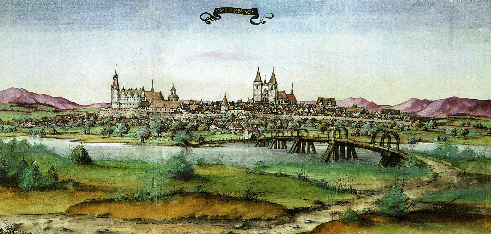
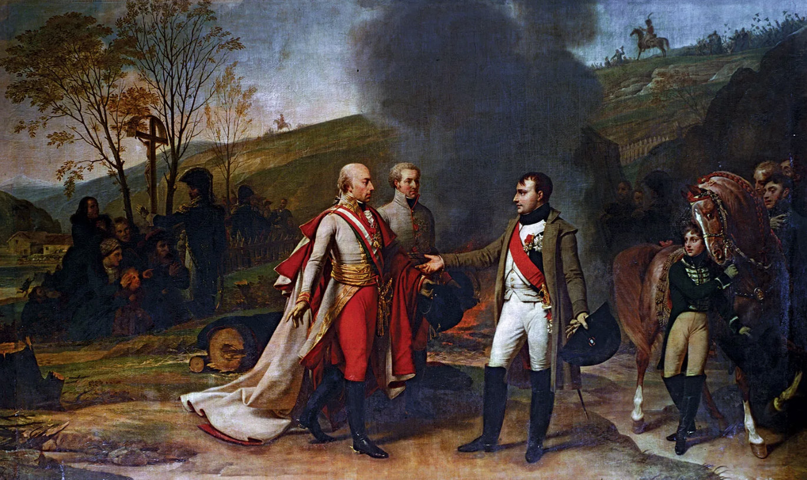
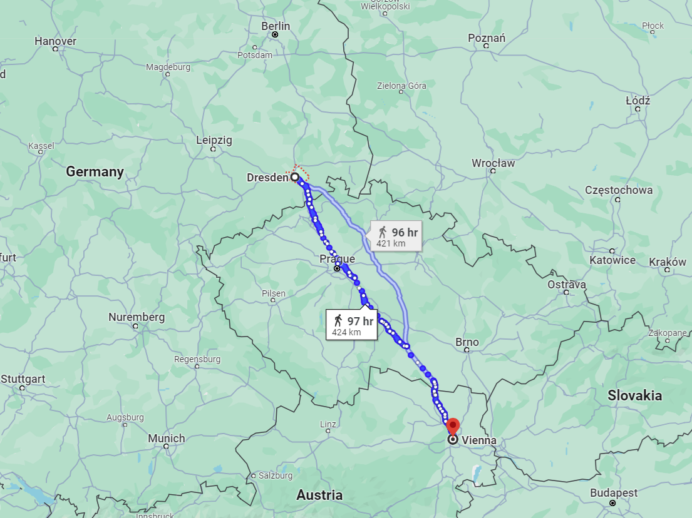
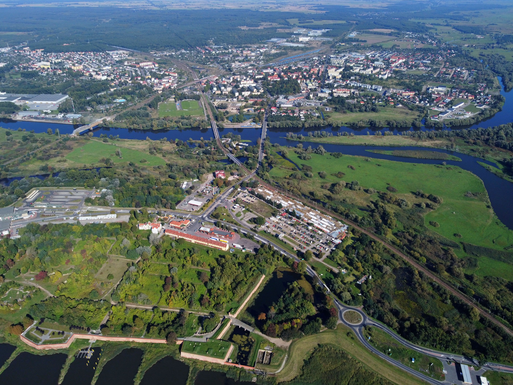
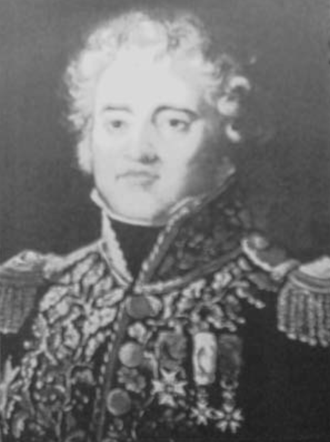

나폴레옹의 고민 - 동쪽 남쪽 북쪽 중 어디로?
게시: 2024-07-01T06:30:45+09:00
나폴레옹이 후퇴하는 보헤미아 방면군에 대한 추격을 중단하고 드레스덴으로 돌아가버리는 바람에 쿨름 전투의 참극이 벌어졌다고 나폴레옹을 비난하는 것은 부당한 일일 수도 있습니다. 여전히 기병대도 부족한데다, 그로스비어런에서 우디노의 베를린 방면군이 패배한 상황에서 별다른 준비도 없이 다짜고짜 보헤미아로 넘어가는 것은 너무 위험한 일일 수 있기 때문이었습니다. 8월 28일 나폴레옹이 드레스덴으로 돌아간 것은 전해지는 것처럼 그의 건강 문제 때문이기도 했지만, 이제 앞으로 어디를 칠 것인가를 심사숙고하기 위한 것이기도 했습니다. 드레스덴에서 나폴레옹은 계속 병상에 드러누워있던 것은 아니었고, 이틀만에 'Note sur la situation générale de mes affaires'(내 문제들에 대한 전반 상황에 대한 메모)라는 있으나마나 한 제목의 문서를 작성했습니다. 여기서 나폴레옹이 결정한 바는 애초에 1813년 춘계 작전을 시작할 때의 원대한 계획, 즉 '강력한 레프트 훅'으로 되돌아간다는 것이었습니다. 기억하시겠지만 러시아가 프로이센과 동맹을 맺고 중부 독일을 침공할 때 나폴레옹이 세운 큰 그림은 발트해 연안을 따라 강력한 공격을 전개하여 베를린을 접수하고 프로이센의 굴복을 받아낸 뒤, 이어서 오데르강을 따라 남진한다는 것이었습니다. 그렇게 하면 동맹군을 잃은 데다 퇴로가 끊길 위험에 처한 러시아군은 폴란드로 후퇴할 것이라는 것이 나폴레옹의 생각이었습니다. 그러나 이 계획은 당장 자신의 주요 위성국인 작센의 수도 드레스덴부터 탈환해야 할 필요성 때문에 바우첸-뤼첸 전투를 거쳐 여기까지 흘러오느라 잠시 보류되었던 것입니다. 애초에 그 계획의 시작을 위해서 우디노를 베를린으로 보냈던 것인데, 믿었던 우디노가 어처구니 없이 국민방위군(Landwehr), 즉 향토예비군 아저씨들로 이루어진 뷜로 프로이센군에 막혀 패젼했을 뿐만 아니라 엘베 강변의 비텐베르크(Wittenberg) 요새까지 우르르 후퇴하는 바람에 나폴레옹은 그야말로 격노했었지요. 그런 상황에서 나폴레옹은 왜 하필 동-남-북쪽 중에서 북쪽의 베를린을 다시 쳐야 한다고 생각했을까요?

(1536년 비텐베르크의 모습입니다.) 슈바르첸베르크를 비롯한 연합군 수뇌부가 가장 두려워한 것은 드레스덴에서 승기를 잡은 나폴레옹이 그대로 보헤미아를 침공하여 프라하를 점령하고 더 나아가 오스트리아의 수도 빈까지 공격하는 것이었습니다. 그럴 경우 가장 뒤늦게 합류한 오스트리아가 동맹에서 떨어져나갈 가능성이 매우 높았기 때문이었습니다. 실제로, 러시아와 프로이센은 칼리쉬 조약을 통해 절대 각국이 나폴레옹과 단독 강화를 맺어서는 안된다는 약속을 한 바 있었습니다만, 정작 오스트리아는 아직 그런 조약에 매이지 않은 상태였습니다. 이런 우려로 인해 연합국들은 며칠 뒤인 9월 9일, 퇴플리츠(Töplitz) 조약을 새삼스럽게 맺게 됩니다. 이 조약을 통해 오스트리아도 나폴레옹과 절대 단독 강화를 맺지 않겠다는 약속에 서명을 하게 되는데, 약간 우습게도 이 조약은 러시아-프로이센-오스트리아 3국이 맺은 것이 아니라 러시아-프로이센, 그리고 다시 러시아-오스트리아가 따로 맺는 형식을 취했습니다. 이는 제6차 대불동맹전쟁의 사실상의 수장으로서 러시아의 강력한 위상을 보여주는 단면이었습니다. 참고로, 어떻게든 유럽 대륙에 피가 강물처럼 흘러야 자국의 안보가 보장된다고 믿었던 영국도 여기서 오스트리아와 별도로 조약을 맺었습니다.

(러시아가 이미 참전한 오스트리아와 굳이 새삼스레 퇴플리츠 조약을 맺은 주목적은 오스트리아의 단독 강화를 방지하자는 것이었습니다. 그런데 이건 사실 러시아가 제발 저리는 부분이 있었기 때문이었습니다. 바로 1805년 아우스테를리츠 패전 이후, 저 혼자 살겠다고 나폴레옹과 단독 강화를 맺고 내뺀 것이 바로 러시아의 알렉산드르였던 것입니다. 이 그림은 아우스테를리츠 전투 이후 나폴레옹과 만나는 오스트리아 황제 프란츠 1세, 아니 당시는 신성로마제국 황제 프란츠 2세의 모습입니다.)
그러나 이런 걱정은 자국 영토로 또다시 나폴레옹이 쳐들어오는 것을 걱정한 오스트리아의 지나친 피해망상에 불과했습니다. 작센과 보헤미아 사이의 자연 국경을 이루는 얼츠비어거 산맥은 역시나 만만치 않은 장애물이었습니다. 짐마차 등을 버리고 급히 퇴각하는 경우는 몰라도, 포병대와 각종 보급품을 잔뜩 끌고가야 하는 공격의 경우 얼츠비어거 산맥 때문에 이동 속도가 확실히 떨어질 수 밖에 없었습니다. 그래서 보헤미아 방면군도 8월 25일 드레스덴 앞에 집결하는데만도 며칠이 걸렸던 것입니다. 게다가 러시아만은 못하겠지만, 오스트리아도 대단히 큰 제국이었습니다. 오스트리아를 동맹에서 탈락시킨다는 목표를 달성하려면 정말 빈까지 쳐들어가야 할 것 같은데, 드레스덴에서 빈까지는 무려 420km가 넘는 거리로서, 바로 작년 빌나에서 스몰렌스크까지의 지옥 같았던 거리 490km에 육박하는 거리였습니다. 참고로 빌나에서 스몰렌스크까지 진격하는데는 얼츠비어거 같은 산맥이 전혀 없었는데도 49일이 걸린 바 있었습니다.

(드레스덴에서 빈까지의 거리입니다. 빈 위쪽에 보이는 보헤미아의 도시 Brno 인근에서 아우스테를리츠 전투가 벌어졌습니다.)
나폴레옹의 입장에서는 베르나도트의 북부 방면군과 블뤼허의 슐레지엔 방면군이 호시탐탐 드레스덴을 노리는 상황에 그 끝이 어디일지 알 수 없는 보헤미아 원정을 선듯 택할 수가 없었습니다. 게다가 애초에 1813년의 제6차 대불동맹전쟁은 오스트리아 없이도 러시아와 프로이센, 그리고 가증스러운 영국 셋이서 시작한 것이었습니다. 만약 정말 빈까지 함락시켜서 다시 합스부르크 왕가가 항복을 하고 전선에서 이탈한다고 해도, 러시아와 프로이센은 여전히 계속 싸울 가능성이 매우 컸습니다. 그건 이미 부족한 병력만 무의미하게 소모시키는 것일 뿐, 누구보다도 평화를 원하던 나폴레옹에게 결정적인 도움이 되는 것은 아니었습니다. 나폴레옹은 3개국 중에서 핵심은 러시아라고 처음부터 정확하게 판단하고 있었고, 러시아를 전선에서 이탈시키는 가장 좋은 방법은 바로 그 퇴로를 위협하는 것이라고 생각했습니다. 강력한 러시아군을 정면에서 들이받는 것은 그야말로 하수들이나 저지르는 실책이라는 것을 나폴레옹은 예전의 아일라우 전투나 보로디노 전투, 올해의 바우첸 전투 등에서 뼈저리게 깨달은 바 있었습니다. 러시아군은 신통하게도 영국군과 비슷한 바가 많아서, 공세로 나설 때는 어설픈 구석이 많지만 수비할 때는 바위처럼 단단했던 것입니다. 하지만 러시아 원정 당시 프랑스군이 바로 그러했듯이, 먼 중부 유럽까지 원정을 온 러시아군도 본국과의 보급로가 끊기는 것이 가장 큰 약점이었습니다. 그러므로 러시아군의 퇴로를 끊기 위해서는 오데르 강변의 요새들, 즉 슈테틴, 퀴스트린, 글로가우 등을 장악하는 것이 필요했고, 그러기 위해서는 1813년 봄 최초의 큰 그림, 즉 베를린을 함락시키고 오데르강을 북쪽 하류부터 남쪽 상류까지 거슬러 올라가는 작전이 역시 최상이라고 판단되었습니다.

(오데르 강변의 3대 요새, 슈테틴, 퀴스트린, 글로가우의 위치입니다.)

(퀴스트린(Küstrin, 폴란드어로는 Kostrzyn nad Odrą(코스친 나도브레) 요새의 옛 모습을 그린 그림입니다.)

(퀴스트린의 현재 모습입니다. 1814년 프랑스군이 철수할 때 이 요새는 완전히 불에 타버렸고, 지금은 거의 옛 요새 모습을 찾아볼 수 없습니다.) 그러나, 드레스덴에서 그 구상을 하는 동안 동쪽에서 비보가 날아들었습니다. 앞서 언급했듯이, 리그니츠(Liegnitz) 인근 카츠바흐(Katzbach) 전투에서 막도날의 보버(Bober) 방면군이 블뤼허에게 참패를 당했다는 것이었습니다. 이어서 날아온 쿨름에서의 참극 소식은 더더욱 큰 고민을 나폴레옹에게 안겨주었습니다. 사실 쿨름의 패전 소식은 이미 보헤미아 침공을 마음 속에서 접은 나폴레옹에게는 결정적인 문제가 아니었습니다. 그러나 카츠바흐 전투의 참패 소식은 차원이 다른 것이었습니다. 패전이야 있을 수 있는 일인데, 문제는 9월 1일 당도한 소식에 따르면 막도날이 속절없이 밀려 불과 며칠 사이에 나이써(Neisse) 강을 넘어 괴를리츠까지 후퇴했다는 것이었습니다. 이대로 방치하면 블뤼허가 작센 영토로 밀고 들어와 바우첸까지도 밀릴 판국이었습니다.

(그림은 퓌또(Jacques-Pierre-Louis Puthod) 장군의 초상화입니다. 퓌또는 나폴레옹과 동갑으로서, 별다른 뛰어난 전과를 올리지는 못했고 주로 스페인 등 부차적인 전선에서 복무했습니다. 그가 그나마 두각을 드러낸 것은 1809년 바그람 전투에서였고, 그 덕분에 1810년에 남작 작위도 얻었습니다. 당시 막도날 휘하에 있던 그는 카츠바흐에서 패전한 이후 후퇴하는 과정에서 폭우로 물이 불어난 보버강을 등진 상태에서 랑제론의 러시아군과 대치해야 했고, 결국 그와 그의 사단 전체가 포로가 되어야 했습니다. 그는 나폴레옹의 퇴위 이후에야 포로 생활에서 풀려났고, 백일천하 때 다시 나폴레옹에게 가담했습니다.)
베를린으로 가야 하는 판국에 발생한 이 위기에 대해 나폴레옹이 내놓은 대책은 무엇이었을까요? Source : The Life of Napoleon Bonaparte, by William Milligan Sloane Napoleon and the Struggle for Germany, by Leggiere, Michael V With Napoleon's Guns by Colonel Jean-Nicolas-Auguste Noël
https://www.britannica.com/event/Battle-of-Austerlitz https://en.wikipedia.org/wiki/Wittenberg https://en.wikipedia.org/wiki/Jacques-Pierre-Louis_Puthod https://en.wikipedia.org/wiki/Kostrzyn_nad_Odr%C4%85 https://en.wikipedia.org/wiki/Raging_Neisse https://en.wikipedia.org/wiki/Battle_of_Dennewitz